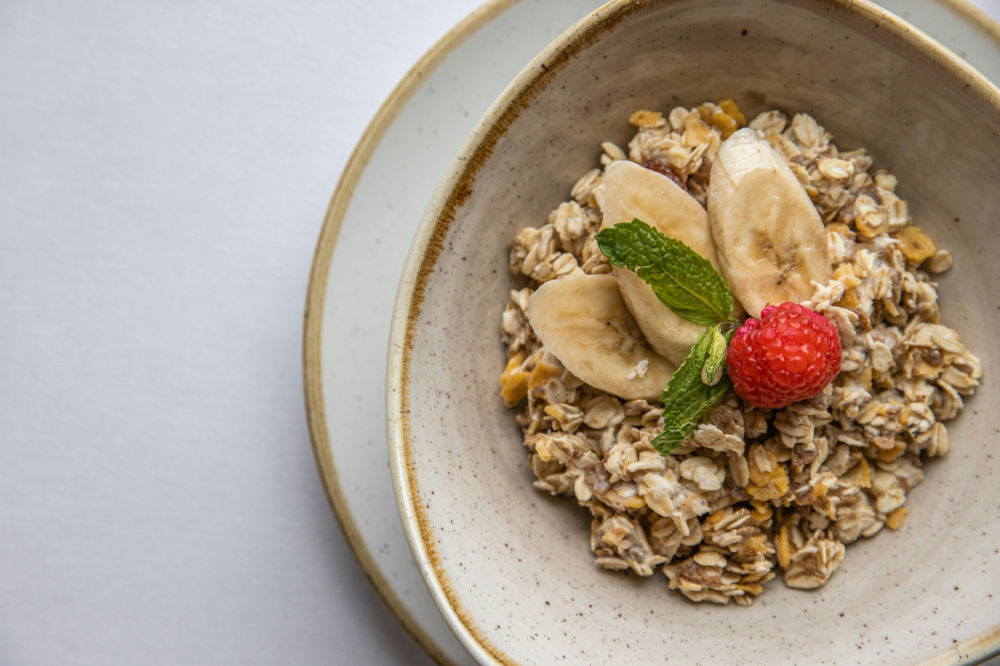

Home
Fluffy Banana Oats

Descriptions
These fluffy banana oat pancakes are naturally sweet, packed with fiber,
and come together in a blender in minutes. Made with ripe banana, eggs,
and rolled oats, they're a healthier twist on classic pancakes that the
whole family will love. Serve warm with maple syrup, fresh fruit, or yogurt.
Ingredients
- 1 cup rolled oats
- 1 cup milk (dairy or non-dairy)
- 1 ripe banana, mashed
- 2 eggs
- 1 tsp vanilla extract
- 1 tsp baking powder
- Pinch of salt
Instructions
- In a blender, combine the rolled oats and milk. Blend until smooth.
- Add the mashed banana, eggs, vanilla extract, baking powder, and salt. Blend again until well combined.
- Preheat a non-stick skillet or griddle over medium heat. Lightly grease with cooking spray or a small amount of oil.
- Pour 1/4 cup of batter onto the skillet for each pancake. Cook until bubbles form on the surface, then flip and cook for another 1-2 minutes until golden brown.
- Repeat with the remaining batter.
- Serve warm with your favorite toppings such as maple syrup, fresh fruit, or yogurt.